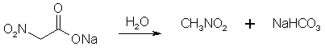

Nitroalkane Preparation FAQby RhodiumIntroductionUnder Construction!Synthesis Of Nitroalkanes From Bromoalkanes By Phase-Thansfer Catalysis Conversion of Aliphatic Nitrites into Nitro-compounds Nitromethane [1]Dissolve 50g of mono-chloroacetic acid in 100 ml water contained in a 500 ml round-bottomed bolt-head flask, and then neutralise the solution by the cautious addition of 30g of finely powdered anhydrous sodium carbonate. For this purpose, add the sodium carbonate in small quantities (about 1g) at a time, preferably with the aid of a spatula, and shake the solution gently around after each addition to facilitate the evolution of carbon dioxide: a clear solution is thus maintained throughout, whereas the rapid addition of large quantities of the carbonate produces lumps of material which are subsequently difficult to dissolve. Now dissolve 36.5g of sodium nitrite in 50 ml of water with gentle heating, cool the solution thoroughly in icewater, and then add it with shaking to that of the sodium monochloroacetate. Add some fragments of unglazed porcelain, and then fit the flask with a delivery-tube of moderately wide bore connected in turn to a water-condenser. Support the flask over a gauze, and then heat it gently with a small Bunsen flame. The solution slowly becomes yellow in colour, then greenish and finally a yellowish-brown, when a vigorous effervescence starts: at once remove the Bunsen flame, and allow the reaction to proceed spontaneously, carbon dioxide being evolved and the solution boiling vigorously. When the reaction subsides, replace the Bunsen flame and maintain a steady boiling. Nitromethane distills over in the steam and separates as a colourless oil at the bottom of the distillate: since nitromethane is slightly soluble in water, stop the distillation as soon as drops of nitromethane can no longer be detected in the distillate leaving the condenser. Transfer the distillate to a separating- funnel, and carefully run off the lower layer of nitromethane and then dry it over anhydrous sodium sulfate for 30 minutes. Filter the dry nitromethane (preferably through a small dry Buchner funnel), transfer it to a 30 ml. distilling-flask fitted with a water-condenser, and then slowly distill, collecting the fraction of bp 100-102°C. In view of the small volume of nitromethane to be manipulated, if a small Buchner funnel is not available, it is advisable to extract the crude nitromethane from the aqueous distillate with ether (30-40ml). Dry the ethereal extract over sodium sulfate, filter through a fluted filter-paper, and then distill off the ether on a water-bath, and finally distill the residual nitromethane. Nitromethane is obtained as a colourless liquid, of bp 101°C and d 1.10, yield, 10 g. An alternative procedure can be found in Organic Syntheses Figure 1: The sodium chloroacetate reacts with the NaNO2, forming sodium nitroacetate. Figure 2: The sodium nitroacetate is very unstable, and upon contact with water hydrolyzes to nitromethane. NitroethaneFrom Silver NitriteCool 100 g of silver nitrite (0.65 mol) in 150 ml of dry ether to 0°C in a 3 neck 500 ml flask (in a darkened room or using yellow light). Add 0.5 moles of ethyl halide (78g ethyl iodide or 55g of ethyl bromide) dropwise over a 2 hour period while stirring constantly and maintaining the temperature at 0°C and dark conditions. Stir for 24 hours at 0°C, then 24 hours at room temp if using ethyl bromide, and 48h if using ethyl bromide. (Test for halogens to see when the reaction is completed, through adding a few drops of the reaction mixture to a test tube containing an alcoholic solution of silver nitrate and note if a precipitate appears. If so, the reaction is not complete. The Beilstein test can also be used, it uses a small coil of copper wire in a test tube to which a small portion of the reaction mixture is added and it is noted if reaction occurs, where elemental silver will deposit on the surface of the copper coil.) Silver iodide (or bromide) will precipitate in the solution during the course of the reaction. Filter off the silver salt, and wash it with several portions of ether. Evaporate the ether at room temperature. (This may be substituted with distillation of the ether using a water bath at atmospheric pressure. A 2x45 cm column packed with 4 mm pyrex helices is used. A more efficient column is not used due to the instability of the ethyl nitrite formed as a by-product in the reaction. Maintain anhydrous conditions since the ethyl nitrite will hydrolyze to ethanol and will be difficult to separate.) Then vacuum distill the residue at about 5 mmHg. The ethyl nitrite will be the initial fraction, followed by an intermediate fraction, then the nitroethane will distill. The yield is about 83% of theory. From Sodium Nitrite [2] 32.5 grams of ethyl bromide (0.3 moles) was poured into a stirred solution of 600ml dimethylformamide and 36 grams dry NaNO2 (0.52 mole) in a beaker standing in a water bath keeping the solution at room temperature as the reaction is slightly exothermic. Always keep the solution out of direct sunlight. The stirring was continued for six hours. After that, the reaction mixture was poured into a 2500 ml beaker or flask, containing 1500 ml ice-water and 100 ml of petroleum ether. The petroleum ether layer was poured off and saved, and the aqueous phase was extracted four more times with 100 ml of petroleum ether each, whereafter the organic extracts were pooled, and in turn was washed with 4x75ml of water. The remaining organic phase was dried over magnesium sulfate, filtered, and the petroleum ether was removed by distillation under reduced pressure on a water bath, which temperature was allowed to slowly rise to about 65°C. The residue, consisting of crude nitroethane was distilled under ordinary pressure (preferably with a small distillation column) to give 60% of product, boiling at 114-116°C. Figure 3: The ethyl bromide reacts with NaNO2, forming nitroethane and ethyl nitrite. This method can be varied in a few ways. Firstly, dimethyl sulfoxide (DMSO) can be substituted for the dimethylformamide (DMF) as solvent. Ethylene glycol also works as solvent, but the reaction proceeds pretty sluggishly in this medium, allowing for side reactions, such as this: RH-NO2 + R-ONO => R-(NO)NO2 + R-OH. KNO2 can also be used instead of NaNO2. If NaNO2 is used in DMF, 30g (0.5 mol) of urea can also be added as nitrite scavenger to minimize side reactions, as well as simultaneously increasing the solubility of the NaNO2 and thereby significantly speeding up the reaction. If the ethyl bromide is substituted with ethyl iodide, the required reaction time is decreased to only 2.5 h instead of 6 h. In case ethyl iodide is employed, a slight change in the above procedure needs to be done. The pooled pet ether extracts should be washed with 2x75ml 10% sodium thiosulfate, followed by 2x75ml water, instead of 4x75ml water as above. This to remove small amounts of free iodine. From Diethyl Sulfate [3] Initial run - Into a stoppered bottle was placed a mixture of diethyl sulfate (120g) and sodium nitrite solution (120g in 160ml of water.) The bottle was shaken mechanically for 20 hours, the pressure being released at intervals. The contents were then poured into a separating funnel, and the upper layer separated, dried over calcium chloride. and distilled at 14 mmHg, the distillate up to 60°C being collected (the residue, ca. 230g., consisted of ethyl sulphate and was used again). The distillate was fractionated at atmospheric pressure, and the fraction of bp 114-116°C collected. This was shaken with water, dried over calcium chloride, run through charcoal, and redistilled; bp 114-115.5°C. Yield, 17.7g. (31%, or allowing for recovered ethyl sulfate, 43.5%). Routine Run - A second experiment was then carried out using the same quantity of ethyl sulfate as above. The recovered nitrite solution (lower layer) from the first run was concentrated by adding approximately 16 g. of sodium nitrite per 160ml of solution. Yield 26.4g (46%, or allowing for recovered ethyl sulphate, 65%). For each additional subsequent run approximately 16 g. of nitrite per 160 ml of solution were added, although this represents a rather diminishing concentration in view of the increased yield of nitroethane. From Sodium Ethyl Sulfate [4] 1.5 mole sodium nitrite (103.5g) is intimately mixed with 1 mole of sodium ethyl sulfate (158g) and 0.0625 moles of K2CO3 (8.6g). The mixture is then heated to 125-130°C, at which temperature the nitroethane distills over as soon as it is formed. The heating is discontinued when the distillation flow slackens considerably, and the crude nitroethane is washed with an equal amount of water, dried over CaCl2, and if needed, decolorized with a little activated carbon. The nitroethane is then re-distilled, collecting the fraction between 114-116°C. Yield 46% of theory. Preparation of Ethyl Bromide [5]1500 ml of concentrated H2SO4 was added to 900 ml H2O, then cooled. Then 1.5 l of absolute ethanol was slowly dripped in, carefully to avoid temperature rise. Cool the mixture and add 1100-1200 g KBr (or equimolar amount of NaBr). Heat the mixture on a sand-bath at the lowest temperature at which the ethylbromide distills over, collect it in water. Wash the ethyl bromide again with water and dry it with CaCl2. Yield 90-96%. Preparation of Ethyl IodideMethod 1 [6] A mixture of 500 g (3.94 mol) of iodine, 800 mL of 84% (w/v) ethanol, and 60 g (2.224 mol) of aluminum foil in small pieces is warmed gently. Once started, the reaction increases progressively in vigor, but can be controlled by cooling; it subsides in about 10 min, and is complete in an hour. The product is distilled until deep red fumes appear. A cold mixture of 700 mL of 84% ethanol and 400 mL of 85% sulfuric acid is added to the cooled residue. After 15 min, distillation is begun, and continued until no more oily drops form in the water in the receiver. The yield of crude ethyl iodide is 260 mL (504 g; approx. 80% yield). Method 2 [7] 1 mole of alcohol and 2 moles of KI (or equimolar amount of NaI) are added to 2.96 moles of 95% phosphoric acid. Reflux the mixture 3-4 hrs. A two-phase mixture will result. Add water and ether to the reaction mixture. Seperate the ether layer, decolorise it with Na-thiosulfate, wash it with saturated NaCl solution and dry it with Na2SO4. Evaporate the ether and distill the remaining alkyl iodide to get ~90% yield. 9) Preparation of Silver Nitrite (AgNO2) [8]Under yellow photograhic light prepare a solution of 76 g (1.1 mol) of sodium nitrite in 250 ml water in a 1 L flask. Prepare a solution of 169.9 g of silver nitrate (1 mol) in 500 mL water. Slowly add the silver salt solution to the sodium nitrite solution with vigorous stirring. After addition is complete, cease stirring and allow the mixture to stand in the dark for 1 hour. A yellow precipitate will form. This is filtered with suction, collected, suspended in 250 ml fresh water, and filtered again. Repeat this washing again, collecting the solid after filtering. Dry the product to constant weight in a vacuum dessicator over KOH pellets. [Note: This means to place the pellets in the bottom of the dessicator, preferably in a glass dish. The ceramic stand on which the sample is supported is put in place and the product, spread thinly on a glass plate, is placed on the support. It does not mean to pour the product over KOH pellets. Vacuum is maintained on the desiccator during the drying period. Drying to constant weight means that you weigh the product, dry longer, weigh again, dry longer, weigh again, and so on until two consecutive weights agree closely; i.e., in the last decimal place to which your balance will weigh.] The drying may be hastened by washing the product once with methanol after the two water washings. Should yield about 134 g (87%). Store in a brown glass bottle and place in a dark storage area until ready to use. Preparation of Sodium Ethyl SulfateMethod 1 [1]To prepare the sodium salt of ethyl hydrogen sulfate, a mixture of alcohol and H2SO4 is boiled under reflux, cooled, and an excess of calcium carbonate is added. The ethyl hydrogen sulfate is converted into the soluble calcium ethyl sulfate, whilst the excess of H2SO4 is removed as insoluble calcium sulfate. The aqueous filtrate is then mixed with just sufficient sodium carbonate to give sodium ethyl sulfate, the insoluble calcium carbonate being now filtered off. The solution of sodium ethyl sulfate can be concentrated on the water-bath without appreciable hydrolysis, and the sulfate finally crystallized out. Place 40ml (32g) of rectified spirit in a 250ml round-bottomed flask, and slowly add. 16ml (30g) of concentrated sulfuric acid, keeping the liquid in the flask well shaken throughout the addition to ensure thorough mixing. Fit a reflux condenser to the flask, and heat the latter on a gauze so that the mixture boils gently for 45 minutes. Then cool the product and pour it into 200ml of cold water contained in a large (8-inch) evaporating-basin or in a shallow earthenware dish. Now add 23g of finely powdered calcium carbonate with stirring to the acid solution. It is essential to add the calcium carbonate as a fine stream of powder, and to stir the latter immediately into the bulk of the solution: for this purpose, it is best to sift the carbonate through a fine sieve directly into the liquid, or alternatively to add it from a spatula, tapping the latter gently over the liquid to ensure steady addition of the finely powdered chalk. If the carbonate is added carelessly several grams at a time, it becomes rapidly covered with insoluble calcium sulfate, which protects it from further reaction: in these circumstances, at least 10 times the theoretical quantity of the carbonate may be required and the evolution of carbon dioxide may continue for several hours. The addition of the calcium carbonate should take about 30 minutes, and the well-stirred mixture should finally be neutral to litmus-paper. Now heat the mixture on a water-bath, using a thermometer as a stirrer, until the temperature reaches 60°C, and then filter at the pump through a wide Buchner funnel: at this temperature, filtration should be rapid. Finally wash the residue of calcium sulfate on the filter with a small quantity of hot water, adding the wash-water to the main filtrate. In order to convert the calcium ethyl sulfate to sodium ethyl sulfate, add a concentrated aqueous solution of sodium carbonate cautiously drop by drop to the well-stirred filtrate until a drop of the latter withdrawn on a glass rod is just sufficiently alkaline to turn red litmus-paper blue. Then filter the solution at the pump, and wash the residual calcium carbonate again with a small quantity of water. Evaporate the filtrate on a water-bath until a drop withdrawn on a rod crystallizes on cooling: then allow the solution to stand until almost cold, and finally chill it thoroughly in ice-water. (If the ice-water cooling is omitted, large well-developed colorless crystals of sodium ethyl sulfate will finally separate.) Filter off the crystals at the pump, drain, and dry over calcium chloride in a desiccator. Yield about 12g. To obtain a second (but necessarily less pure) crop of the sulfate, evaporate the filtrate further on the water-bath, and cool as before. Method 2 [4] Two moles of absolute ethanol (92 grams) is slowly dripped into a beaker containing one mole of 20% Oleum (H2SO4 containing 20% SO3), adjusting the rate so that the temperature is maintained at 45°C. When all the ethanol is added, the solution is neutralized with anhydrous sodium carbonate (Na2CO3), care being taken for the evolution of carbon dioxide. Yield 85% of theory. References[1] Mann & Saunders, Practical Organic Chemistry, 3rd Ed.[2] Kornblum, New Synthesis of Aliphatic Nitro Compounds J. Amer. Chem. Soc. 78, 1497 (1956) [3] McCombie, Preparation of Nitroethane, J. Chem. Soc. 24-25 (1944) [4] Synthesis of Nitroethane, CA 49, 836b [5] [6] Jones & Green, J. Chem. Soc. 2760 (1926) [7] Stone & Shechter, J. Org. Chem. 491 (1949 or 1950) [8] Kornblum, Silver Nitrite Org. Syn. 38, 75 (1958) |